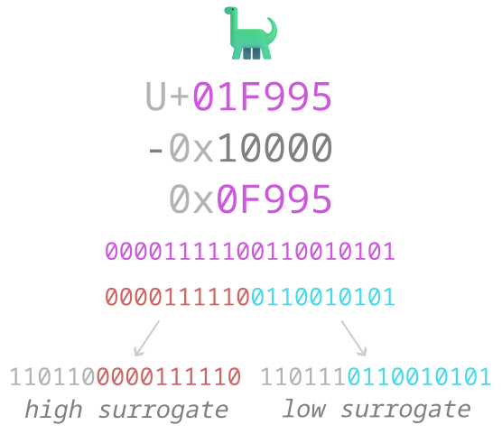

Glyph — a pictograph used to communicate information (letters, numbers, punctuation, etc.)
Code point — a numeric identifier assigned to a glyph or control character
Control character — a code point without an associated glyph, used for conveying metadata
Encoding — a method of representing code points
for (c = 'a'; c <= 'z'; ++c) putchar(c);x - 'a'0xYZ is encoded
as 0b0YYYZZZZ00000000 000uvvvv wwwwxxxx yyyyzzzz“E” — Latin Capital Letter E (U+0045)
00000000 00000000 00000000 01000101
“💻” — Personal Computer (U+1F4BB)
00000000 00000001 11110100 10111011
| First code point | Last code point | byte 1 | byte 2 | byte 3 | byte 4 |
|---|---|---|---|---|---|
| U+0000 | U+007F | 0yyyzzzz |
|||
| U+0080 | U+07FF | 110xxxyy |
10yyzzzz |
||
| U+0800 | U+FFFF | 1110wwww |
10xxxxyy |
10yyzzzz |
|
| U+010000 | U+10FFFF | 11110uvv |
10vvwwww |
10xxxxyy |
10yyzzzz |
“E” — Latin Capital Letter E (U+0045)
01000101
“💻” — Personal Computer (U+1F4BB)
11110000 10011111 10010010 10111011
XXXXX000 XX011111 XX010010 XX111011

strcmp(3)strcmphere are some strings:
string 1: "ĒÅö"
string 2: "ĒÅö"
and here’s the hex data of these strings (in UTF-8):
C4 92 E2 84 AB C3 B6
45 CC 84 C3 85 6F CC 88 0A
wut.
Ē — Latin Capital Letter E With Macron (U+0112)Å — Angstrom Sign (U+212B)ö — Latin Small Letter O With Diaeresis (U+00F6)E — Latin Capital Letter E (U+0045)¯ — Combining Macron (U+0304)Å — Latin Capital Letter A With Ring Above
(U+00C5)o — Latin Small Letter O (U+006F)¨ — Combining Diaeresis (U+0308)Unicode defines 4 normal forms: